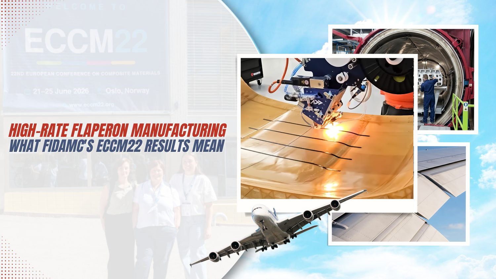
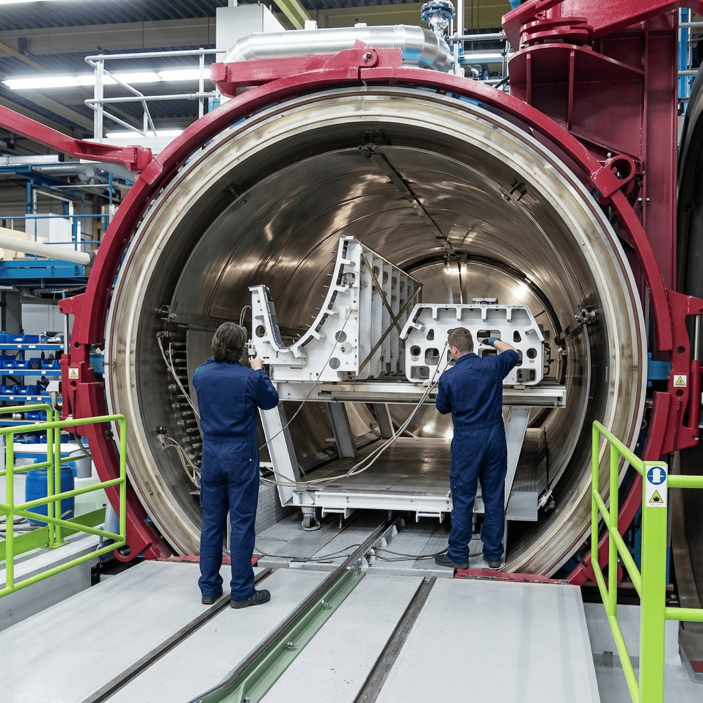
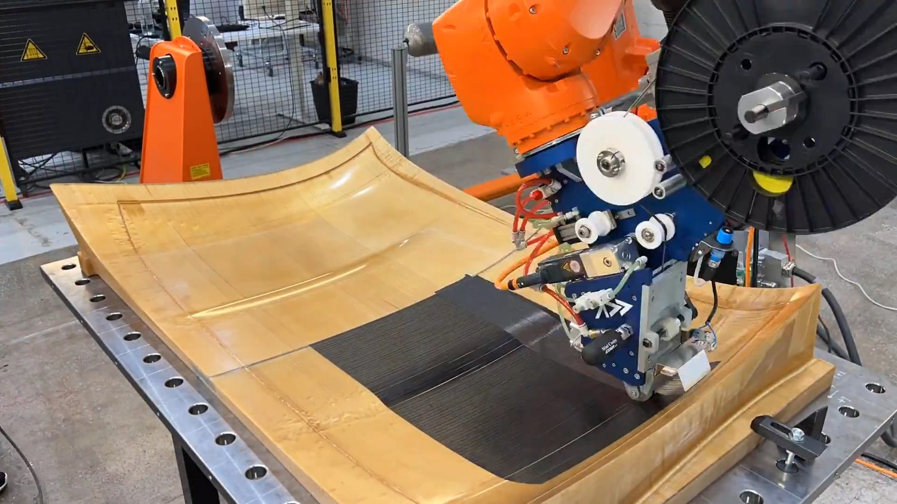
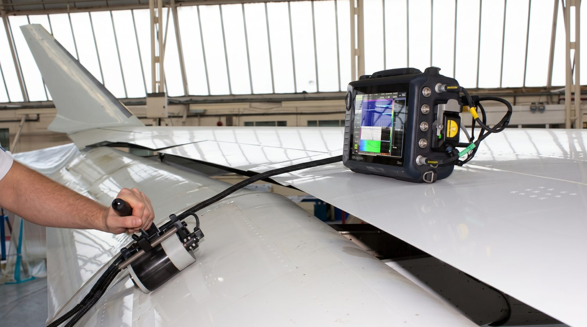
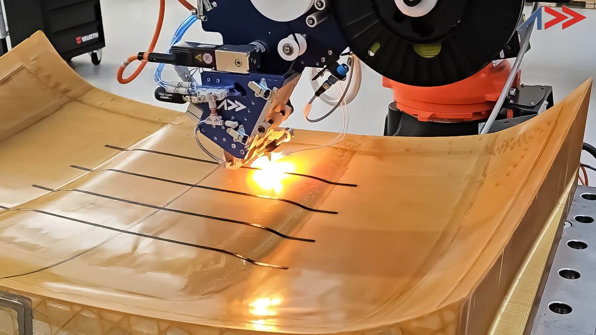
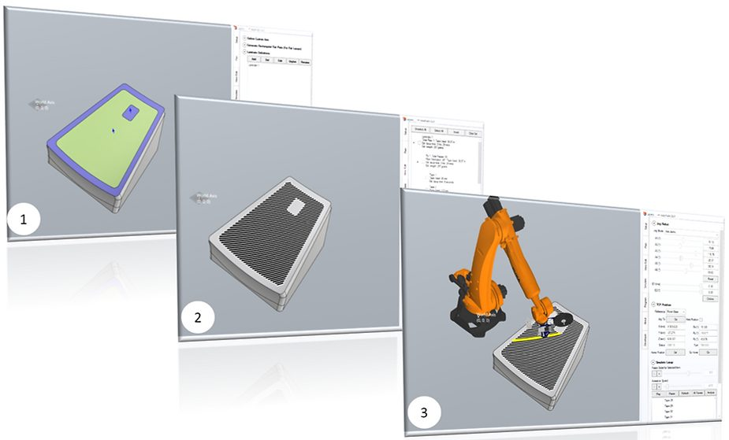
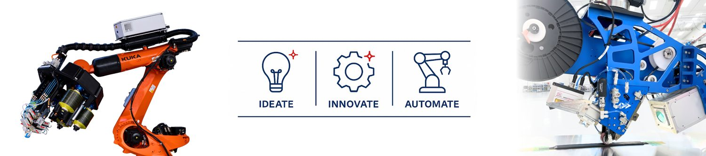

One Flaperon, Zero Autoclave Cycles: What FIDAMC's ECCM22 Results Mean for High-Rate Aerostructure Manufacturing

A flaperon is not a concept part. It is not a lab demonstrator built to prove a material system works in principle. It is a flight-critical control surface, bolted to the trailing edge of a wing, cycling thousands of times over an aircraft's service life, and it exists today on essentially every commercial and military platform with a combined flap-aileron control architecture. So when Mar Zuazo Ruiz of FIDAMC — the composites technology foundation that supplies Airbus Defence and Space — stood up at ECCM22 in Oslo this June and presented “Stamping and AFP for Next-Gen High-Rate Flaperon Manufacturing,” the room was not looking at a proof of concept. It was looking at a production strategy.
A flap-aileron control surface (flaperon) shown in the deflected position on the wing trailing edge, illustrating the hinged, load-bearing architecture that makes such flight-critical components challenging to manufacture at production rate.
The headline result
A full flaperon built from 11 internally stamped continuous-fibre thermoplastic ribs, co-integrated into a single automated fibre placement (AFP) laminated skin using in-situ consolidation — with no autoclave cure step anywhere in the process. That single sentence quietly answers a question the aerostructures industry has been circling for over a decade: can a flight-critical control surface be built entirely out-of-autoclave, at rates fast enough to matter, without giving up the structural integration that makes composites worth using in the first place?
This post breaks down why that question is so hard to answer, what FIDAMC's process actually does differently, and why the “boring” manufacturing detail — stamped ribs plus AFP skin, one shot, no oven — is the part that should matter most to anyone evaluating automated fibre placement for a real production programme rather than a research demonstrator.
Why Flaperons Are a Manufacturing Bottleneck, Not Just a Design Problem
A flaperon looks simple from the outside: a trailing-edge control surface, aerodynamically shaped, hinged at the wing. Structurally, it is a small, dense assembly problem. The internal architecture typically requires a series of ribs running spanwise, each one carrying transverse loads into the skin and out to the hinge and actuator attachment points, wrapped in an upper and lower skin that has to hold its aerodynamic shape under repeated cyclic loading.
The conventional manufacturing route builds these as separate pieces. Ribs are laid up or machined independently. Skins are laid up separately, often via automated fiber placement, and cured in an autoclave. Then the whole assembly is joined — riveted, bonded, or both — in a secondary operation that adds fasteners, adds weight, adds inspection points, and adds the single most expensive and time-consuming step in the entire chain: the autoclave cycle itself, which can run for hours at controlled temperature and pressure ramps, tie up capital equipment, and constrain how many parts a factory can push through per shift.

A large aerospace composite autoclave during part loading, showing tooling and components being moved into the pressure chamber. The autoclave cure is among the most time- and capital-intensive steps in conventional composite manufacturing.
For a single high-value component, that cost structure is tolerable. For a control surface that needs to be built at rate — across a wide-body program, a defense platform ramping production, or a next-generation single-aisle aircraft trying to hit an ambitious delivery cadence — every one of those separate steps compounds. This is exactly the throughput pressure that NASA's Hi-Rate Composite Aircraft Manufacturing (HiCAM) initiative and its in-situ consolidation AFP of thermoplastics (ICAT) work were set up to address: closing the gap between what AFP can theoretically lay down and what a factory can actually consolidate, join, and ship.
Drawn side by side, the two build routes look like this:
FIDAMC · ECCM22 2026 · build-route comparison
Two routes to a finished flaperon
The conventional route chains four separate operations through an autoclave cure. Stamping plus in-situ consolidation AFP collapses that into one integrated build with no oven.
Traditional flaperon build
Stamping + AFP integrated build
What FIDAMC's Process Actually Does Differently
The FIDAMC result combines two manufacturing steps that are each individually well-established, but rarely deployed together on a flight-critical primary control surface: stamp forming for the internal ribs, and in-situ consolidated AFP for the skin.
Stamping continuous-fibre-reinforced thermoplastic ribs is fast — press-forming cycles are measured in minutes, not hours, because the thermoplastic matrix is reheated to a formable state and pressed into shape rather than chemically cured. FIDAMC's own published capability list confirms they run infrared preheaters and both 30- and 1,000-ton heated presses specifically for this kind of stamp-forming work, alongside six AFP/ATL machines used for skin and fuselage panel work. Producing 11 ribs this way, rather than laying each one up as a wet or prepreg composite and curing it individually, removes a large chunk of the labour and cycle time from the internal structure before the skin is ever built.
The second half — and the part that eliminates the autoclave entirely — is in-situ consolidation AFP (ISC) of the thermoplastic skin. In a conventional AFP process, tape is laid down and the whole layup is cured afterward, typically in an autoclave. In an ISC process, a heat source (laser or hot-gas torch) melts the incoming tape and the previously deposited ply together as the AFP head moves, welding each new layer to the last in real time. When it works well, the part comes off the machine already structurally consolidated — no secondary cure step required. Industry reporting on FIDAMC's broader thermoplastic work confirms this is exactly their approach: one-step ISC integrated skin/stringer structures, with consolidation quality reaching roughly 90% of what an autoclave or hot press achieves — high enough for primary aerostructures, and improving further as FIDAMC works with suppliers on flatter, higher-quality feedstock tape.
Combining these two processes into a single flaperon build means the ribs are stamped, the skin is laid and consolidated in place around or onto them, and the assembly reaches near-final geometry without ever going into an oven. That is the structural and cost story in one sentence: fewer discrete curing operations, fewer secondary joints, less non-recurring tooling tied up in autoclave scheduling.
Why the Rate, Not Just the Materials, Is the Real Innovation
It's worth being precise about what's actually novel here, because “thermoplastic composites in aerospace” is not new — thermoplastic AFP research has been running for more than three decades, and in-situ consolidation has moved from lab curiosity to flying hardware on several programs already. What FIDAMC's flaperon result demonstrates is not a new material system.
It's evidence that the rate case for thermoplastic AFP holds up on a real, geometrically complex, multi-rib control surface — not just on a flat panel demonstrator.

Addcomposites' AFP-XS head depositing tow onto a double-curvature mould, illustrating the surface complexity and conforming layup required for geometrically complex parts such as multi-rib control surfaces.
That distinction matters enormously for anyone doing AFP ROI math for a production decision. Flat-panel thermoplastic AFP demonstrators are common in the literature and at conferences like ECCM — they're useful for characterizing consolidation quality, void content, and mechanical properties under controlled conditions. But a flaperon has curvature, rib intersections, load-path complexity, and multiple part interfaces. Getting stamping and in-situ consolidation to work together on that geometry, at a rate that's credible for production, is the harder engineering problem, and it's the one that determines whether a manufacturing strategy survives contact with an actual production line.
Plotted against part-geometry complexity, the FIDAMC flaperon sits in a different tier of process maturity than the flat-panel and coupon-level work the field usually reports on:
Thermoplastic AFP · process maturity landscape
Complexity vs. demonstrated process maturity
The FIDAMC flaperon is the first result to combine high part geometry complexity with a full-assembly, production- representative demonstration — not just a lab characterization or sub-component test.
FIDAMC, ECCM22 2026
demonstrators
TSS Albany, flying
panel studies
Industry-Specific Angles: Defense, Commercial Retrofit, and Beyond
For defense and government aerospace programs, the Airbus Defence and Space connection is not incidental. Military platforms often run longer production tails than commercial programs, with sustained demand for spares and structural upgrades over decades of service. A flaperon manufacturing process that cuts autoclave dependency and secondary assembly steps is directly relevant to sustaining rate on those programs without expanding autoclave capital footprint — a constraint that matters just as much for emerging defense manufacturing bases (including newer entrants building out indigenous composite aerostructure capability) as it does for established primes.
For commercial aircraft OEMs and tier suppliers, the case is about closing the gap between AFP's theoretical lay-down speed and what a factory can actually turn into finished, inspected parts per shift — precisely the throughput target NASA's HiCAM program has been chasing. A control surface is a comparatively small, well-bounded part to prove this on before attempting it on a larger structure like a wingbox or fuselage panel, which makes flaperons a sensible first production target for stamping-plus-ISC manufacturing strategies.
For eVTOL and next-generation air mobility platforms, which are being designed from a blank sheet with weight, part count, and manufacturing rate as first-order constraints from day one, a validated stamping+AFP control-surface process is arguably even more directly transferable — these platforms don't carry the legacy tooling and qualification inertia of a 30-year-old commercial airframe program, and many are already committed to thermoplastic-heavy structures for weldability and repairability reasons.
Where This Is Heading

Ultrasonic non-destructive inspection of a composite aircraft structure using a handheld phased-array probe and portable flaw detector, representative of the inspection methods being developed for one-step consolidated parts.
The next steps for this kind of process are exactly where you'd expect: further improving feedstock tape flatness and quality to push ISC consolidation quality closer to full autoclave-equivalent properties, building out non-destructive inspection methods suited to one-step consolidated parts rather than post-cure assemblies, and running the qualification and certification testing needed to move from a conference demonstrator to a production part number. None of that is a materials breakthrough waiting to happen — it's process engineering and qualification discipline, which is a more predictable (if less headline-grabbing) path to production.
How Addcomposites Can Help

FIDAMC's flaperon result validates exactly the manufacturing pathway Addcomposites' AFP-XS and AFP-X platforms are built around: in-situ consolidation thermoplastic AFP with an open, configurable process architecture rather than a closed black-box system, so process parameters like heating profile, compaction force, and layup path can be tuned to the specific rib geometry and skin curvature of a given part rather than forced into a fixed recipe. Addcomposites' work inside the TOSCA and AeroComp EU research programmes is directly aimed at maturing exactly this kind of out-of-autoclave, high-rate thermoplastic manufacturing case for structural aerospace parts, and AddPath CAM software handles the path planning complexity that multi-rib, curved-skin geometries like a flaperon actually demand.

AddPath CAM workflow for automated fibre placement: (1) mould surface and boundary definition, (2) generated tow-path layup over the part, and (3) robotic simulation of the deposition sequence, illustrating the path-planning required for curved, multi-feature geometries.
If you're evaluating AFP for a control surface, structural rib-and-skin assembly, or any other flight-critical part where autoclave dependency is limiting your production rate, explore what's possible at www.addcomposites.com.
Talk to the Addcomposites team about how in-situ consolidation AFP fits your next high-rate aerostructure programme →
Get in Touch with Addcomposites
References
- M. Zuazo Ruiz, K. Fernández Horcajo, R. Contento Tercedor, A. Hernandez Ortiz, A. Blanco Laiz, “Stamping and AFP for Next-Gen High-Rate Flaperon Manufacturing,” 22nd European Conference on Composite Materials (ECCM22), Oslo, Norway, June 2026, Paper #631, Sub-theme 5.6 Automated Placement Technologies.
- FIDAMC, “FIDAMC participates in the 22nd European Conference on Composite Materials (ECCM22) with three presentations on advanced manufacturing, recycling and sustainability of composites,” FIDAMC News, 2026. URL: fidamc.es
- “FIDAMC expands composites R&D into new markets and advanced manufacturing centers,” CompositesWorld, 2025.
- “Consolidating thermoplastic composite aerostructures in place, Part 1 & Part 2,” CompositesWorld, 2021/2023.
- NASA, “In-Situ Consolidation Automated Fiber Placement of Thermoplastic Composites for High-Rate Aircraft Manufacturing,” Hi-Rate Composite Aircraft Manufacturing (HiCAM) Project, NASA Technical Reports Server, 2022.